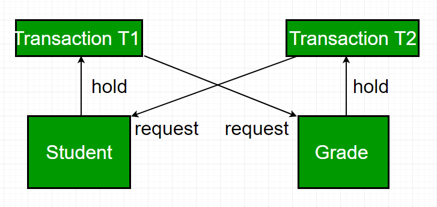
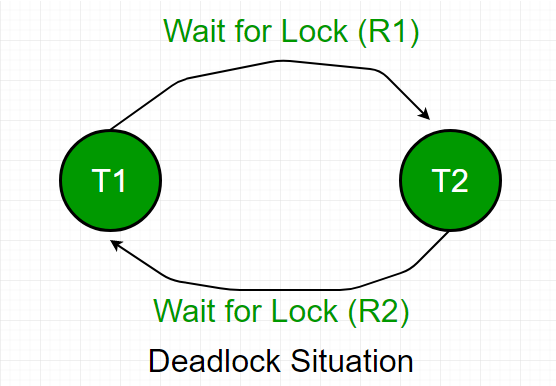

In a database, a deadlock is an unwanted situation in which two or more transactions are waiting indefinitely for one another to give up locks. Deadlock is said to be one of the most feared complications in DBMS as it brings the whole system to a Halt.
Example – let us understand the concept of Deadlock with an example :
Suppose, Transaction T1 holds a lock on some rows in the Students table and needs to update some rows in the Grades table. Simultaneously, Transaction T2 holds locks on those very rows (Which T1 needs to update) in the Grades table but needs to update the rows in the Student table held by Transaction T1.
Now, the main problem arises. Transaction T1 will wait for transaction T2 to give up lock, and similarly transaction T2 will wait for transaction T1 to give up lock. As a consequence, All activity comes to a halt and remains at a standstill forever unless the DBMS detects the deadlock and aborts one of the transactions.

Deadlock Avoidance –
When a database is stuck in a deadlock, It is always better to avoid the deadlock rather than restarting or aborting the database. Deadlock avoidance method is suitable for smaller database whereas deadlock prevention method is suitable for larger database.
One method of avoiding deadlock is using application consistent logic. In the above given example, Transactions that access Students and Grades should always access the tables in the same order. In this way, in the scenario described above, Transaction T1 simply waits for transaction T2 to release the lock on Grades before it begins. When transaction T2 releases the lock, Transaction T1 can proceed freely.
Another method for avoiding deadlock is to apply both row level locking mechanism and READ COMMITTED isolation level. However, It does not guarantee to remove deadlocks completely.
Deadlock Detection –
When a transaction waits indefinately to obtain a lock, The database managememt system should detect whether the transaction is involved in a deadlock or not.
Wait-for-graph is one of the methods for detecting the deadlock situation. This method is suitable for smaller database. In this method a graph is drawn based on the transaction and their lock on the resource. If the graph created has a closed loop or a cycle, then there is a deadlock.
For the above mentioned scenario the Wait-For graph is drawn below

Deadlock prevention –
For large database, deadlock prevention method is suitable. A deadlock can be prevented if the resources are allocated in such a way that deadlock never occur. The DBMS analyzes the operations whether they can create deadlock situation or not, If they do, that transaction is never allowed to be executed.
Deadlock prevention mechanism proposes two schemes :
- Wait-Die Scheme –
In this scheme, If a transaction request for a resource that is locked by other transaction, then the DBMS simply checks the timestamp of both transactions and allows the older transaction to wait until the resource is available for execution.
Suppose, there are two transactions T1 and T2 and Let timestamp of any transaction T be TS (T). Now, If there is a lock on T2 by some other transaction and T1 is requesting for resources held by T2, then DBMS performs following actions:Checks if TS (T1) < TS (T2) – if T1 is the older transaction and T2 has held some resource, then it allows T1 to wait until resource is available for execution. That means if a younger transaction has locked some resource and older transaction is waiting for it, then older transaction is allowed wait for it till it is available. If T1 is older transaction and has held some resource with it and if T2 is waiting for it, then T2 is killed and restarted latter with random delay but with the same timestamp. i.e. if the older transaction has held some resource and younger transaction waits for the resource, then younger transaction is killed and restarted with very minute delay with same timestamp.
This scheme allows the older transaction to wait but kills the younger one. - Wound Wait Scheme –
In this scheme, if an older transaction requests for a resource held by younger transaction, then older transaction forces younger transaction to kill the transaction and release the resource. The younger transaction is restarted with minute delay but with same timestamp. If the younger transaction is requesting a resource which is held by older one, then younger transaction is asked to wait till older releases it.
References –
docs.oracle
difference between wait-die and wound-wait